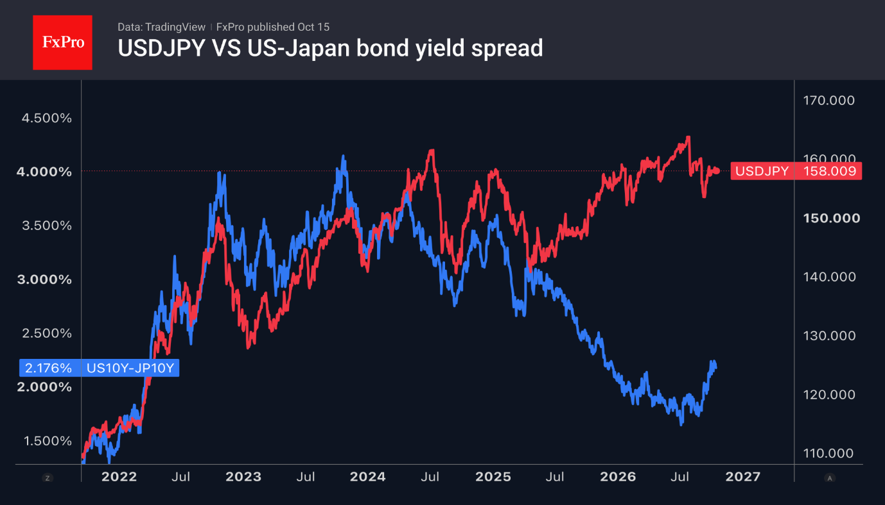

- The selling of the USD, verbal interventions, and ‘hawkish’ rhetoric from the BoJ have helped the yen.
- The wide bond yield spread suggests the USDJPY uptrend remains intact.
The US dollar went on a rollercoaster ride as consumer prices surged in September to a five-month high of 3.7%. Inflation exceeded forecasts. This raised the chances of the Fed tightening monetary policy in October to 50% and propelled the US Dollar Index to 18-month highs. However, these odds subsequently plummeted to 25%. Investors turned their attention to Kevin Warsh’s speech in Bangkok. Although the Fed chairman is not one to give hints, investors will be looking for clues to clarify the outlook for interest rates and the greenback.

The US dollar’s reaction to the inflation data reflects a shift in market sentiment. Investors are becoming increasingly concerned about how far the federal funds rate will rise, rather than exactly when it will be raised. At one point, the probability of four rounds of monetary tightening by the Fed over the next 12 months soared to 61%. It then returned to its previous level on the back of expectations surrounding Kevin Warsh’s speech. His commitment to achieving the 2% target could trigger a further rise in Treasury yields and reignite the greenback’s advance.
According to BlackRock, the combination of a record federal budget deficit and fierce competition from technology companies to raise capital is creating the conditions for structurally higher interest rates on debt over the long term. This is bad news for USDJPY bears. The wide yield spread between US and Japanese bonds will push the pair higher until the pace of monetary tightening by central banks changes.
The yen attempted a counterattack, aided by the government's resumption of verbal interventions and hawkish rhetoric from the Bank of Japan. Finance Minister Satsuki Katayama warned that her ministry is prepared to intervene in the foreign exchange market if necessary. BoJ board member Junko Koeda noted that the BoJ should not be overly cautious in raising interest rates.

Nevertheless, the futures market anticipates that the Fed and the Bank of Japan will tighten monetary policy at the same pace; given the wide bond yield spread, this suggests that the fall in USDJPY should be viewed as a correction within an uptrend.
The FxPro Analyst Team